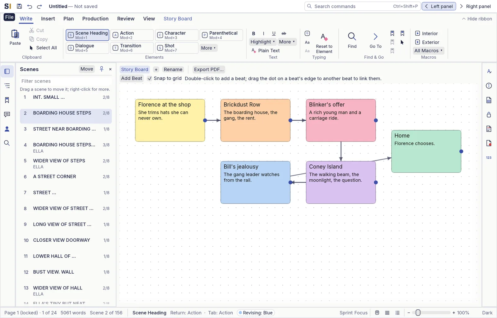
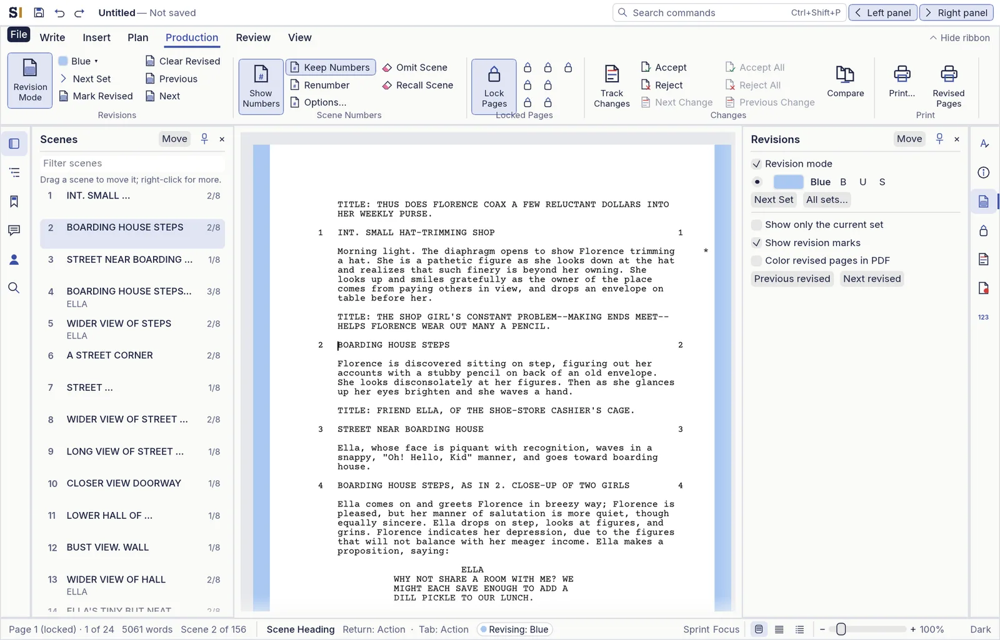
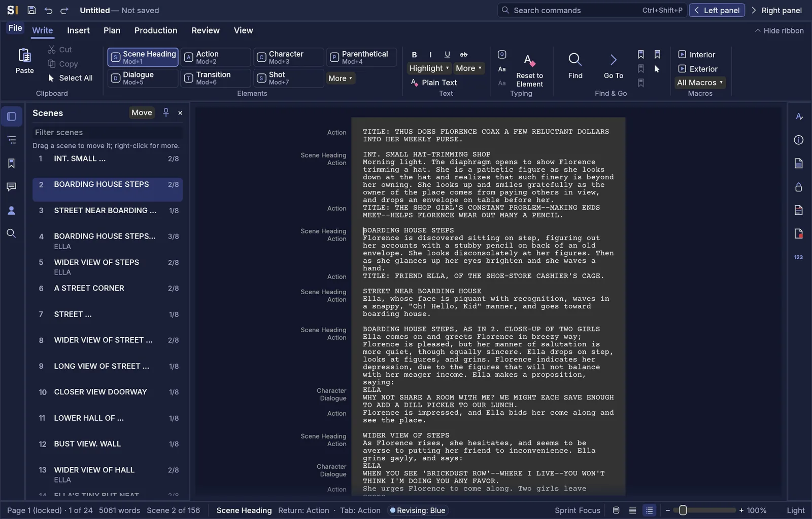

a Wordsmith & Ink app
Write the screenplay. The page takes care of itself.
A free, open-source screenwriting app. Type with two keys doing the formatting, see every page as it will print, and take the script into production with revision colors, locked pages and scene numbers.

What it does
Everything a script needs, from first draft to shooting script.
Formatting on two keys
Return and Tab move between scene headings, action, characters, parentheticals, dialogue and transitions. The status bar always says what comes next.
Industry pages
Courier Prime on standard margins, with (MORE) and (CONT'D), scene continueds, a title page, and PDFs and printouts that match the screen.
Autocomplete that waits
Character names, places and times offered as you type, never typed for you. Spelling, find and replace, and notes on any text.
Structure
Index cards and a scene view that reorder the script, a story board of beats, an outline in lanes, scene colors and a structure strip.
Production
Revision mode on the standard color cycle with margin marks, scene numbers with A-scenes and omitted scenes, locked pages and revised-pages-only printing.
Reports
Scene lengths in eighths, a character report, a representation report and writing statistics, with goals and a sprint timer.
Templates
Feature screenplays, TV episodes, stage plays and more, with dual dialogue when two people talk at once.
Open files
A plain-text native format that reads well in version control. Fountain both ways, import from text, RTF and PDF, export to PDF, RTF, text, HTML and CSV.
Command line
Convert, export and report from a terminal or a build script, and let tools you choose drive the app.




Familiar from day one
Works the way screenwriters already work.
Wordsmith Script follows the conventions the industry has used for decades, so you can move between it and other screenwriting software without relearning anything. The ribbon is named for screenplay work: Write, Insert, Plan, Production, Review and View.
- Plain-text scripts you can read, back up and compare anywhere
- Auto-save and timestamped backups, every file saved safely
- No telemetry. The only request it makes is an update check you can turn off
- Screen readers supported through the platform's accessibility tools
- MIT or Apache-2.0 licensed: free to use, study and improve
Try it today
Build it from source.
There are no installers yet. If you're comfortable with a terminal and have Rust installed, you can run the current version now. Installers for macOS, Windows and Linux come with the first release.
git clone https://github.com/jamescjfoundation/wordsmith-script
cd wordsmith-script
cargo run --release -p wordsmith